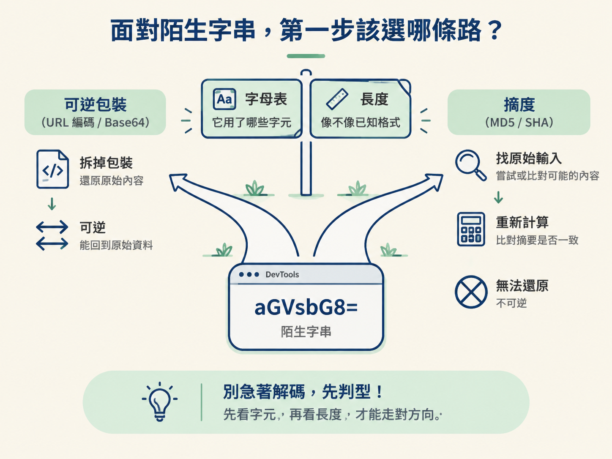
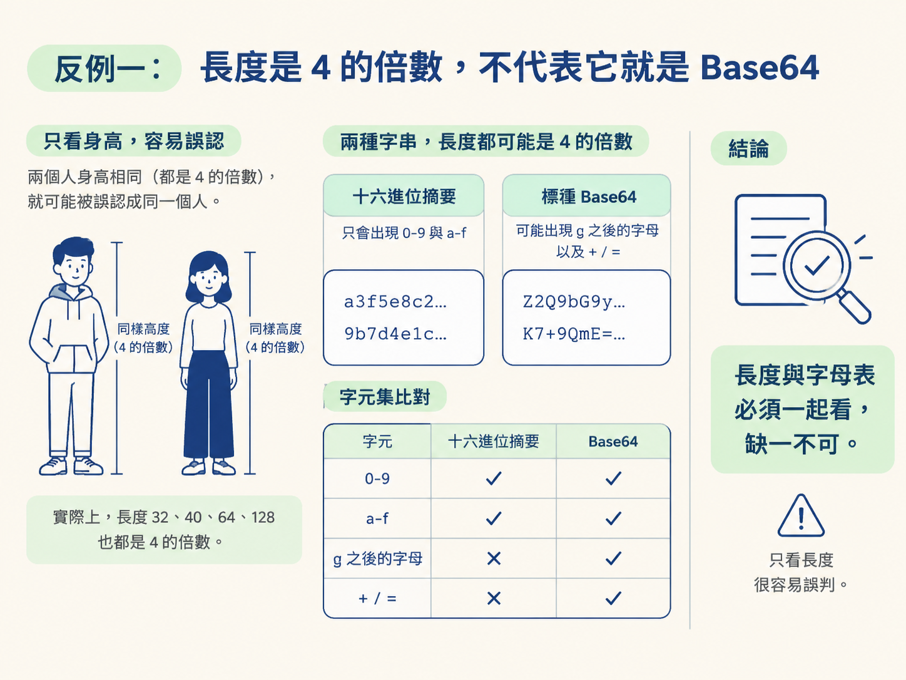
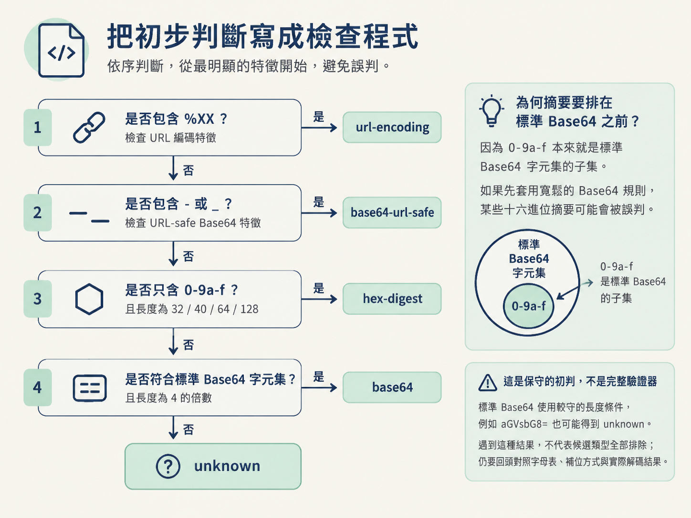

你在 DevTools 的 Network 面板裡打開一筆請求，複製出參數值 aGVsbG8=。接下來該直接做 Base64 解碼，還是先補齊字元？它會不會其實是摘要，根本無法還原？
這個決定會把你帶往兩條完全不同的路。如果它是 URL 編碼或 Base64，你要做的是拆掉可逆的包裝；如果它是摘要，解碼器幫不上忙，你得改找原始輸入，再重新計算摘要。
判錯方向，輕則白忙一場，重則可能把拆開的第一層誤認成最終內容。因此，看到陌生字串時先別急著解。先看它使用哪些字元，再看長度像不像已知格式。

判型時主要觀察兩件事：字元集，也就是它用了哪些「字母」；以及長度是否符合常見格式。這些線索不能保證答案，但能幫你決定先試哪一種處理方式。
| 類型 | 字母表特徵 | 長度特徵 | 優先嘗試 | 何時不要直接選它 |
|---|---|---|---|---|
| URL 編碼 | 出現 % 加上兩位十六進位數字，例如 %XX | 長度不固定 | 用 unquote 還原 | 只有零星的 %，卻沒有接兩位十六進位時 |
| 標準 Base64 | 只使用 A-Z a-z 0-9 + / = | 含尾端補位字元 = 時，總長度通常是 4 的倍數 | 用 b64decode 解碼 | 字串只含 0-9 a-f，而且長度剛好符合常見摘要時 |
| URL-safe Base64 | 使用 A-Z a-z 0-9 - _ = | 可能省略尾端的 = | 先把 - 換成 +、_ 換成 /，再解碼 | 沒有 - 或 _，也找不到其他變體線索時 |
| 十六進位摘要 | 只使用 0-9 a-f | MD5 為 32、SHA-1 為 40、SHA-256 為 64、SHA-512 為 128 | 尋找輸入並重新計算 | 不要把它當成可逆編碼，嘗試直接「解開」 |
| 自訂字母表 Base64 | 看起來仍是安全字元，但字母順序被重排 | 外形可能仍接近一般 Base64 | 先取得對方使用的字母表 | 沒有字母表或相關程式碼時，不能只靠一般解碼器判定結果 |
從封包複製字串後，不必立刻打開一排解碼工具。先照順序檢查下面幾件事，通常問到第二、三題，就能知道該先走哪條路。
% 開頭、後面緊接兩位十六進位數字的片段？如果有，先把它當成 URL 編碼，使用 unquote 還原，再觀察結果。0-9 與 a-f 組成？長度又是否剛好是 32、40、64 或 128？兩者都符合時，優先懷疑它是十六進位摘要，不要把時間花在尋找「解碼」方法上。- 或 _？如果有，可以優先測試 URL-safe Base64，把它們換回 + 與 / 後再解碼。A-Z a-z 0-9 + / =？包含尾端的 = 時，總長度是否符合 Base64 常見形狀？如果都符合，就可以先嘗試標準 Base64。字母表與長度是導航牌，不是身分證。它們適合用來決定「先試什麼」，卻不能單獨證明字串「一定是什麼」。以下三種情況最容易讓人走錯路。
十六進位摘要的常見長度 32、40、64、128，剛好也都是 4 的倍數。只看長度，就像只看身高認人，很容易把不同對象混在一起。
真正能協助區分的是字元集。十六進位摘要只會出現 0-9 與 a-f，不會出現 g 之後的字母，也不會有 + / =。因此，長度與字母表必須一起看。

一段 Base64 解碼後仍然像亂碼，不一定代表操作錯誤。它裡面可能包著 AES 密文，形成「Base64 外層、對稱加密內層」的結構。
這時，Base64 解得開只代表第一步走對了。下一步應該觀察解碼結果的形狀，並繼續尋找加密流程與金鑰，而不是停在第一層。
摘要結果常以十六進位字串呈現，但程式也可能把摘要再轉成 Base64 才傳送。你在封包裡看到的是 Base64 外形，拆開後才會發現裡面真正裝的是摘要。
因此，判型的用途是決定先做哪一步，不是看到外形就直接宣布答案。每拆開一層，都要重新檢查一次字母表、長度與內容。
如果經常要從封包中檢查參數，可以把判別問題整理成一個初判函式。它負責快速分類；碰到自訂字母表或多層包裝時，仍然要回到 DevTools 與網站程式碼中人工確認。
import re, base64
def guess_shape(s: str) -> str:
if re.search(r"%[0-9A-Fa-f]{2}", s):
return "url-encoding"
if "-" in s or "_" in s:
return "base64-url-safe"
if re.fullmatch(r"[0-9a-f]+", s) and len(s) in (32, 40, 64, 128):
return "hex-digest"
if re.fullmatch(r"[A-Za-z0-9+/=]+", s) and len(s.rstrip("=")) % 4 == 0:
return "base64-standard"
return "unknown"這段程式的判斷順序是刻意安排的。它先攔下特徵最明顯的 URL 編碼與 URL-safe Base64，接著判斷十六進位摘要，最後才檢查標準 Base64。
摘要必須放在標準 Base64 前面，因為 0-9a-f 本來就是標準 Base64 字元集的子集。如果先套用寬鬆的 Base64 規則，某些十六進位摘要可能會被誤判。
也要注意，這只是一個保守的初判函式，不是完整驗證器。它對標準 Base64 使用了較窄的長度條件，因此像前面的 aGVsbG8= 也可能得到 unknown。遇到這種結果，不代表候選類型全部排除；你仍要回頭對照字母表、補位方式與實際解碼結果。

先看字母表，再看長度，最後用實際結果驗證。看到%XX，先試 URL 還原；看到-或_，先查 URL-safe Base64；只有0-9 a-f，且長度為 32、40、64 或 128，先按摘要處理；符合 Base64 字元集時，再嘗試解碼。每拆開一層，就重新判型一次。
把這五個步驟放回整體流程來看，你練的是一套「認字、還原、重算」的基本功。URL 編碼與 Base64 是可逆包裝，可以拆開；摘要通常不能逆推，要改從輸入重算。先把這條分界看清楚，之後遇到對稱或非對稱加密時，才知道哪一段可以直接處理，哪一段必須繼續找演算法與金鑰。